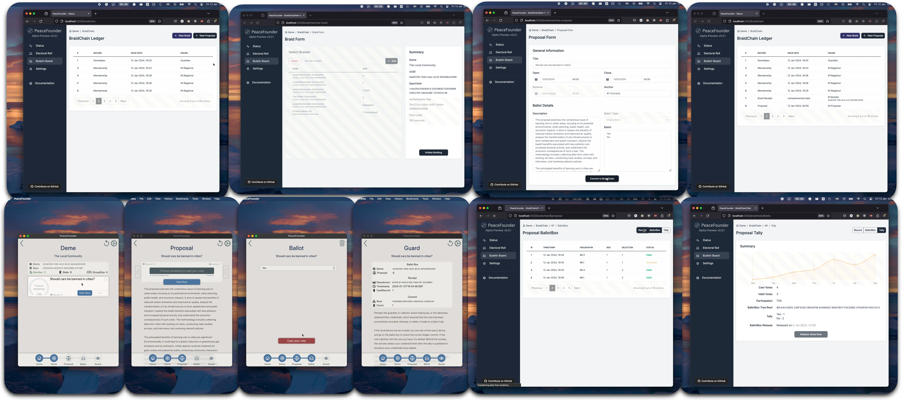
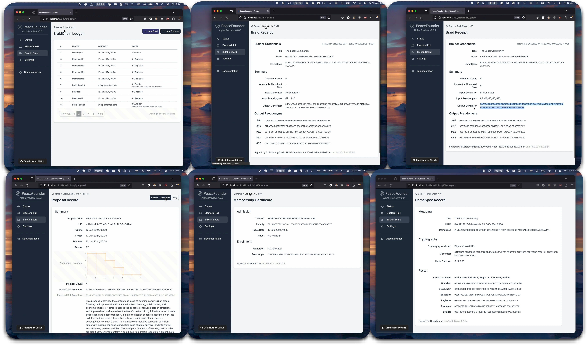

Setup
In the PeaceFounder, communities are referred to as demes. To start a deme, we first need to initialise the cryptographic specification and generate a key for the election authority, which we shall refer to as the guardian. The guardian can further delegate a recorder, recruiter, braider, proposer and collector in the roster recorded in DemeSpec record.
System Setup
The first step to begin using the PeaceFounder e-voting system is to host it, which is a straightforward process on Linux servers. Begin by downloading the snap package with the command below, and remember to change the architecture to arm64 if necessary:
curl -LOJ https://github.com/PeaceFounder/PeaceFounderAdmin/releases/download/v0.0.1/peacefounder-server-0.0.1-x64.snapNext, proceed to install the package:
snap install --devmode peacefounder-server-0.0.1-x64.snapThis installation process automatically handles the compilation and configures the system to start automatically with systemd.
The admin panel, accessible at http://127.0.0.1:3221, is hosted locally and is not directly accessible from external networks. To access the admin panel remotely, use SSH to forward the local host port:
ssh -L 2332:127.0.0.1:3221 user@192.168.1.16This trick does a secure authentification to the server and is free from PKI network trust assumptions.
The admin panel start with a setup wizard, guiding you to select a cryptographic group, choose a hash function, and generate keys. The server generates the guardian key, which is then encrypted with the provided password and stored in the deme record (a feature currently not implemented). Alternatively, you can use the advanced configurator. This option allows for local creation and signing of the deme record, with the option to encrypt the guardian key on the record (also yet to be implemented). The configurator also facilitates server migration, allowing you to input an existing tarball of braidchain records. The deme record is then appended as the last record, enabling continuity (this feature is also pending implementation).
Once the wizard is complete, the PeaceFounder server becomes active at http://0.0.0.0:4585. This is the public access point for clients and exposes the REST API. Further configurations, such as setting up an SMTP server to send invitations to prospective members, are done in the Settings panel. Here, you also need to specify an address through which clients can connect to the server. This could be a local address, a public IP, or a DNS pointing to the PeaceFounder REST API.
It's important to note that configuring the system doesn't require a TLS certificate for security, as all replies are signed with braidchain and ballotbox tree root commits. Using TLS can be detrimental as it might lower the threshold for making the system vulnerable to DDOS attacks since TLS session resumption has to be disabled to maintain voter anonymity. Each session would require a new key exchange, relying on a relatively costly group operation. Nevertheless, adding TLS currently wouldn't incur additional costs, as HTTP request processing performance is currently not optimised. Furthermore, the PeaceFounder client functions smoothly, even when the server is configured behind NGINX.
Member Registration

The process of member registration is conducted via email, through which a unique token is dispatched to the user. Unlike JWT tokens, which are typically incorporated into the header of a TLS connection, the token in this system serves a different purpose. It is utilised as a key in the format HMAC(body|timestamp, token) to authenticate requests. To enable the server to identify the origin of the request, a tokenid=Hash(token) is included in the header (currently, ticketid is used but will be made obsolete shortly).
When an invite is entered into the PeaceFounder client, the following steps are performed :
- The device will retrieve deme specification parameters from the provided address, which will be compared with the hash in the invite;
- The cryptographic parameters are initialised, and a new key pair is generated;
- The public key will be authenticated with HMAC using the invite token and will be sent to the deme server, which shall return the public key signed by the registrar, which we shall refer to as the admission certificate;
- In the last step, the device retrieves the current braidchain generator and computes its pseudonym. This, together with the admission certificate, is signed by the member's private key, which consists of a member certificate. The member certificate is sent to the braidchain until History Tree inclusion proof is received, concluding the process. If the generator has changed, a new pseudonym is recomputed.
To guarantee the auditability of the electoral roll, the process involves members signing the received invitations and their corresponding membership certificate record index with a widely trusted digital identity and returning the document to the guardian. This method is robust and effective; the invitation includes a demespec, ensuring that the client has securely interacted with the claimed entity and has used correct cryptographic parameters. Additionally, the member index acts as a confirmation of successful registration. Such a mechanism renders this e-voting system universally adaptable, making it a viable option globally in regions where any form of digital identity infrastructure is in place.
Voting

The registration of members is followed by the generation of a braid. To boost anonymity, several braids can chained together in sequence. This technique raises the anonymity threshold - the least number of entities required to be breached to associate a member's certificate with their voting pseudonym. Currently, the system supports only self-braiding, setting the maximum anonymity threshold at one. Future updates aim to enable braiding between different demes, which could be either fictional entities created for specific votes or real communities worldwide. The integrity of the final braid receipt is verified using Zero-Knowledge Proofs (ZKPs) and recorded in the braidchain.
To initiate voting, the guardian sets up a new proposal. This proposal includes key details such as opening and closing times, title, description, ballot, and an anchor. The anchor is essentially the index of a braid, whose generator and pseudonyms are utilised for the vote. Members registered after the braid’s creation are not included in that particular vote. However, continuous member registration and the ability to self-braid should minimise such exclusions. The anchor also facilitates linking multiple proposals, allowing fluid voting situations where members can alter their votes at predetermined times during a representative’s term.
As voting progresses, each vote is logged in the ballot box ledger, displaying the vote cast index, timestamp, sequence number, and vote status. Voters receive a receipt including the timestamp and cast index as a tracking number, which enables them to locate their vote on the bulletin board. The pseudonym links all votes cast from a single device. Plans are underway to introduce an additional token for verifying the vote’s authenticity and a public bulletin board hosted as a static webpage. This will allow voters to ensure their vote is cast as intended and counted accurately.
BraidChain Ledger

The BraidChain and BallotBox ledgers together create publicly available proof of election integrity. The BallotBox ledger is straightforward, containing votes signed with the voter's pseudonym without altering the state of the ballot box. In contrast, the BraidChain ledger is more complex, and every record changes the system state. Auditors can run audit commands on records stored in the disk (in development) that require no deep understanding of the underlying data structure. However, in cases where issues arise, having a reference point to communicate about these issues effectively is beneficial.
Each record in the BraidChain ledger is authenticated by an issuer's digital signature. To be included, the issuer's record must possess the necessary authorisation, with corresponding public keys detailed in the DemeSpec record, particularly in the roster section. Should there be a need to change a party's key, a revised DemeSpec record is issued, authenticated with the Guardian's private key. It's crucial to secure this key diligently to prevent adversaries from assuming authority and hijacking the election process, which could disrupt availability and create an inconsistent state for participants, leading to the generation of blame proofs. In events where the Guardian's key is compromised, it would necessitate the re-establishment of the deme from scratch. Looking ahead, a potential improvement could involve requiring multiple parties to sign off on the DemeSpec record for it to be valid, thus reducing the likelihood of such breaches.
Developer Documentation
In this example, the cryptographic parameters are specified in the crypto variable and are further used to initialise the keys on the server for a recruiter, braider, collector and recorder with Mapper.initialize!(crypto) call. The identities are retrieved with Mapper.system_roles() call and are used to fill fields in the DemeSpec record. Afterwards, it is signed by the guardian and is submitted to the server with Mapper.capture!(demespec), which finalises the server configuration, after which the server can be started.
import PeaceFounder: Model, Mapper, Service, id, approve
import PeaceFounder.Model: TicketID, CryptoSpec, DemeSpec, Signer
import HTTP
crypto = CryptoSpec("sha256", "EC: P_192")
GUARDIAN = Model.generate(Signer, crypto)
PROPOSER = Model.generate(Signer, crypto)
Mapper.initialize!(crypto)
roles = Mapper.system_roles()
demespec = DemeSpec(;
uuid = Base.UUID(121432),
title = "A local democratic community",
crypto = crypto,
guardian = id(GUARDIAN),
recorder = roles.recorder,
recruiter = roles.recruiter,
braider = roles.braider,
proposer = id(PROPOSER),
collector = roles.collector
) |> approve(GUARDIAN)
Mapper.capture!(demespec)
HTTP.serve(Service.ROUTER, "0.0.0.0", 80)The second part is to set up the entry for registration within the deme. It is up to the guardian to decide how new members are added to the deme and how their identity is being tracked and made transparent so that members are assured that someone has created fake identities to vote multiple times.

That would best be done within the organisation's website, where members can log in and get an invite as a string or QR code scanned in the PeaceFounder client application. To facilitate that, the PeaceFounder service offers a recruiter endpoint from which invites can be obtained and accessed, knowing ROUTE = "0.0.0.0:80" and recruiter symmetric key KEY = Mapper.get_recruit_key(). That makes it relatively easy to integrate into the webpage as it only needs the ability to read some JSON and sha256 hash functions used to authenticate and compute registration tokens at the endpoints. That also makes it redundant to add a TLS certificate for the PeaceFoudner service.
Registrar setup
**Note: This setup part has been deprecated in favour of PeaceFounderAdmin. **

To make it easier to start using the peacefounder, a simple registrar facade, as shown in the image above, is available in Recruiters.jl. When a user puts in his name and email address, a unique invite is automatically sent to the email with which the user can register. This can also serve as a starting point to make a custom registrar facade and see the involved components, which makes it work. To set it up, we first need to export variables for the deme:
export DEME_ROUTE='http://0.0.0.0:80'
export DEME_HASHER='sha256'
export DEME_RECRUIT_KEY='THE_RECRUIT_KEY'And also for the SMTP service with which recruit emails are going to be sent. This is specified in the following variables:
export RECRUIT_SMTP='smtps://mail.inbox.lv:465'
export RECRUIT_EMAIL='demerecruit@inbox.lv'
export RECRUIT_PASSWORD='THE_EMAIL_PASSWORD'After these environment variables are set, the recruiter service can be started as:
using Recruiters
title = "Local Democratic Community"
pitch = """
<p> Are you looking for a way to get involved in local politics and make a difference in your community? Do you want to connect with like-minded individuals who share your values and beliefs? If so, we invite you to join our Local Democratic Community.</p>
<p> Our community is a group of individuals who are passionate about promoting progressive values and creating positive change in our neighborhoods and towns. We believe that by working together, we can build a more just and equitable society for everyone. As a member of our community, you will have the opportunity to attend events, participate in volunteer activities, and engage in meaningful discussions about the issues that matter most to you.</p>
"""
Recruiters.serve(title, pitch)By default, the serve function reads in the environment variables, but if necessary, those can be specified manually by a set of keyword arguments. See docs for further use of those.
Braiding
Braiding is a method in which the mix server shuffles input member public keys and raises that to the power of a secret exponent $x$, resulting in a new set of public keys with relative generator $h = g^x$. This procedure must be executed honestly, which can be verified with zero-knowledge proofs.
In particular, ElGamal re-encryption shuffle is done first on the elements $(a, b) \leftarrow (1, Y_i)$ for which a zero knowledge of proof compatible with the Verificatum verifier is produced. Then, a proof of decryption for $c'_{i} \leftarrow {b'}_{i}^x$ and $h \leftarrow g^x$ is produced. That then is used to calculate the resulting member public keys as $Y'_i \leftarrow c'/a'$.
In PeaceFounder, this operation can be executed with the following lines of code:
input_generator = Mapper.get_generator()
input_members = Mapper.get_members()
# This line is executed on an independent mix
braidwork = Model.braid(input_generator, input_members, demespec, demespec, Mapper.BRAIDER[])
Mapper.submit_chain_record!(braidwork)The first demespec contains cryptographic parameters for the group specification for input_generator and input_members. The second demespec is added by the braider, which signs the resulting braid and assures that an independent entity endorsed by a different deme provides assurances to the voter that his vote remains private from the guardian.
Proposal announcement
A proposal to the PeaceFounder service can be added with a PROPOSER key as follows:
commit = Mapper.get_chain_commit()
proposal = Proposal(
uuid = Base.UUID(23445325),
summary = "Should the city ban \
all personal automotive vehicle usage?",
description = "",
ballot = Ballot(["yes", "no"]),
open = Dates.now(),
closed = Dates.now() + Dates.Second(2),
collector = roles.collector,
state = state(commit)
) |> approve(PROPOSER)
ack = Mapper.submit_chain_record!(proposal) Notice that state(commit) is added to the proposal. This anchors the relative generator on which the votes are cast.